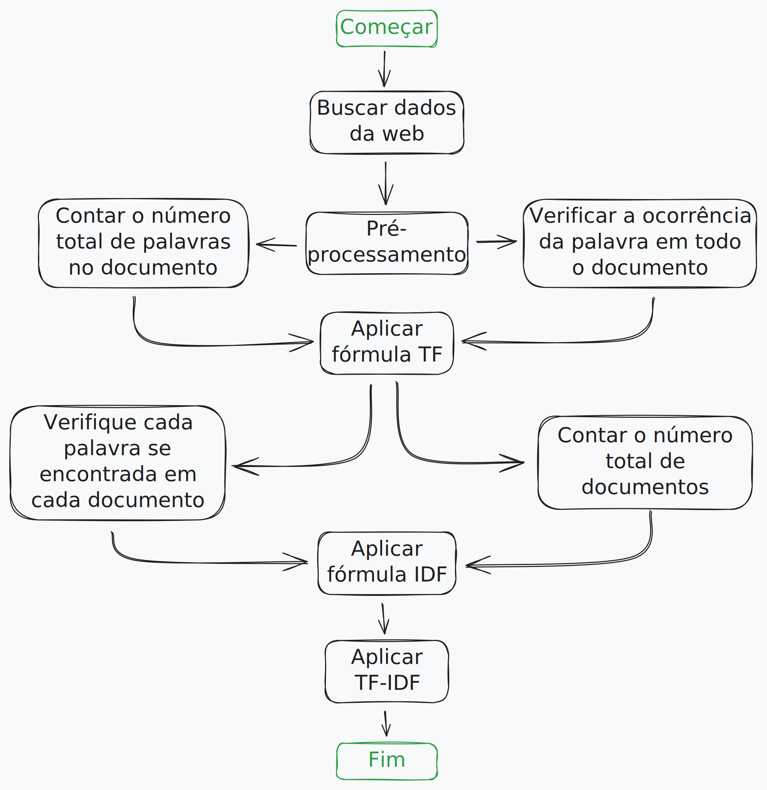
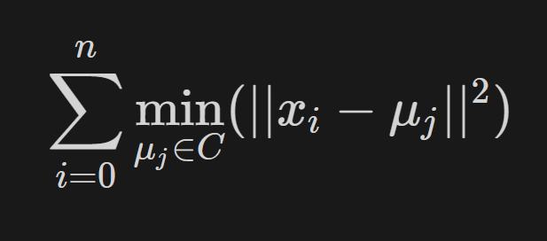
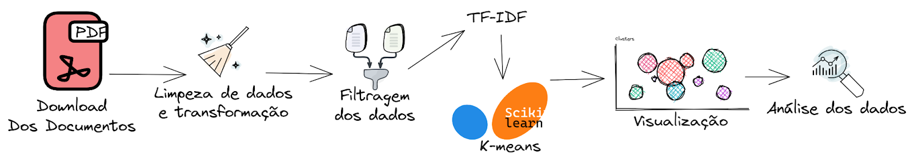

Este artigo trata-se do produto de 1 ano de pesquisa e estudo do projeto de PIBIC desonvolvido por Lucas Souza Santos como bolsista entre 2022-2023, com foco em Ciência de Dados e Mercado de Caítais.
Este artigo não foi publicado oficialmente. Então não pode ser citado na integra. Seu resumo pode ser encontrado nos Anais de Iniciação Científica — UNIVERSIDADE FEDERAL DA PARAÍBA - UFPB PRÓ-REITORIA DE PESQUISA - PROPESQ, vigência 2022-2023.
RESUMO
Este estudo aborda a aplicação de técnicas de Processamento de Linguagem Natural (PLN) e Aprendizado de Máquina (ML) para analisar dados textuais de relatórios financeiros anuais de empresas brasileiras. O objetivo é identificar padrões e agrupamentos nas atividades empresariais com base nas descrições das “Atividades do Emissor” nos Formulários de Referência (FRE) entregues à Comissão de Valores Mobiliários (CVM). O estudo utiliza o algoritmo K-means para realizar a clusterização dos documentos por similaridade. A análise começa com a obtenção e pré-processamento dos textos. A técnica de vetorização TF-IDF é aplicada para quantificar os textos, e o algoritmo K-means é usado para agrupar as empresas em clusters. A escolha do número de clusters é realizada através do método do cotovelo e do coeficiente de silhueta. Os resultados indicam que empresas do setor elétrico apresentam agrupamentos mais coesos, indicando a presença de palavras relevantes para esse setor nos relatórios. No entanto, em alguns casos, a clusterização não apresentou agrupamentos distintos, sugerindo a necessidade de melhorias na consistência das descrições de atividades, e outros algoritmos de agrupamento podem ser utilizados futuramente. O estudo demonstra que a qualidade e relevância das informações nos relatórios financeiros podem influenciar diretamente a eficácia das técnicas de análise. O trabalho contribui mostrando a viabilidade de usar dados não estruturados para identificar padrões nas atividades empresariais. Sugestões para futuros estudos incluem a expansão para anos subsequentes, a comparação de algoritmos de agrupamento e a exploração de outras fontes de dados.
INTRODUÇÃO
Atualmente, com a abundância de dados textuais disponíveis, especialmente em meios digitais como redes sociais, manchetes jornalísticas e relatórios empresariais, o interesse em extrair insights relevantes desse vasto acervo tem crescido consideravelmente. Técnicas computacionais, como Processamento de Linguagem Natural (PLN) e Machine Learning (ML), têm sido amplamente utilizadas para analisar esses dados e prever variáveis financeiras. Transformar a comunicação da linguagem humana em dados aos quais o computador possa entender.
E para análise desses dados não-estruturados gerados no PLN um dos conjuntos de técnicas mais utilizados é o Machine Learning (ML), que é um conjunto de métodos que permitem aos computadores aprenderem com os dados para fazer e melhorar previsões (por exemplo, câncer, vendas semanais, inadimplência de crédito). O aprendizado de máquina é uma mudança de paradigma da “programação normal”, onde todas as instruções devem ser explicitamente dadas ao computador, para a “programação indireta” que ocorre por meio do fornecimento de dados (MOLNAR, 2022).
A análise textual é uma área emergente em contabilidade e finanças e, como resultado, as taxonomias correspondentes ainda são um tanto imprecisas. A análise textual pode ser considerada como um subconjunto do que às vezes é rotulado de análise qualitativa, com a análise textual mais frequentemente caindo nas categorias de frases direcionadas, análise de sentimentos, modelagem de tópicos ou medidas de similaridade de documentos (LOUGHRAN; MCDONALD, 2016. p. 2).
Há várias vantagens e aplicações da quantificação de dados textuais, Tetlock; Saar-Tsechansky; Macskassy (2007) aplicam a análise textual de notícias do dia-a-dia para prever o lucro e retornos das empresas. Esse tipo de pesquisa aplicando métodos computacionais já é bastante difundido e utilizado no mercado financeiro americano, no estudo de estratégias de investimento e compreensão de diferentes tipos de ativos, sejam ações, ETFs, criptomoedas e afins. Na literatura brasileira alguns autores já aplicam essas metodologias ao mercado de ações do país, Godeiro (2018) por exemplo, utiliza textos de notícias financeiras para melhorar a previsão do prêmio de risco, aos investidores.
O presente trabalho visa a coleta de dados textuais de relatórios financeiros anuais, entregues à Comissão de Valores Mobiliários (CVM) pelas empresas listadas na mesma, estes relatórios são chamados de Formulários de Referência (FRE). E assim, aplicar algoritmos de ML para clusterização (agrupamento) dos documentos por similaridade, identificando clusters por setor das empresas com base nas descrições das “Atividades do Emissor”, descritas nos FREs. Automatizando a classificação setorial a partir da autodeclaração das atividades das empresas.
Também será utilizada a técnica de vetorização de textos TF-IDF. Artigos como Hoberg e Phillips (2016), Loughran e McDonald (2011), Loughran e McDonald (2016) e Tetlock, Saar-Tsechansky e Macskassy (2007) exploram a importância das palavras nos textos, relacionando a preços de ações e a outras variáveis financeiras, a técnica tf-idf dentre outras já citadas são amplamente utilizadas nestas pesquisas da área financeira.
Segundo a B3 (2023), empresa do ambiente de bolsa e balcão do Brasil, a atual estrutura para a classificação setorial foi elaborada considerando-se, principalmente, os tipos e os usos dos produtos ou serviços desenvolvidos pelas empresas. Para a classificação das empresas, foram analisados os produtos ou serviços que mais contribuem para a formação das receitas das companhias, considerando-se, ainda, as receitas geradas no âmbito de empresas investidas de forma proporcional às participações acionárias detidas. No caso de companhias de participação, foi considerada a contribuição de cada setor na formação das receitas consolidadas, sendo que: Se algum setor representou participação maior ou igual a dois terços das receitas, a empresa de participação foi classificada nesse setor; Caso contrário, a empresa de participação foi classificada como holding diversificada.
Nesta pesquisa, será feita a classificação das empresas por setor a partir da aplicação de um algoritmo de clusterização aos textos sobre as atividades que a empresa desenvolve, como já mencionado, esses grupos serão comparados com a classificação setorial da B3 e também com a classificação da NAICS que é o Sistema de Classificação da Indústria da América do Norte, um sistema de classificação padronizado usado para classificar empresas e atividades econômicas em setores específicos. Ele é usado principalmente pelos governos dos Estados Unidos, Canadá e México para coletar e analisar dados econômicos. O NAICS é baseado em princípios de produção incorporada e busca agrupar unidades produtoras que realizam atividades semelhantes usando recursos semelhantes (UNITED STATES, 2023).
Além desta parte introdutório, este trabalho está dividido em objetivos (segunda parte), procedimentos metodológicos (terceira parte), resultados e discussão (quarta parte) e conclusão (quinta parte).
OBJETIVOS
Objetivo Geral
O objetivo principal deste estudo é avaliar se os dados textuais provenientes de relatórios financeiros anuais de empresas brasileiras, quando submetidos a algoritmos de Machine Learning, possuem a mesma informatividade que os setores econômicos.
Objetivos Específicos
- Coletar dados textuais de relatórios anuais financeiros de empresas brasileiras.
- Aplicar técnicas de análise de dados, processamento de texto e machine learning para transformar os dados não estruturados em informações úteis aos modelos de clusterização de variáveis financeiras.
- Relacionar o agrupamento obtido com a classificação setorial vigente das empresas de capital aberto no Brasil.
PROCEDIMENTOS METODOLÓGICOS
Obtenção e Preparação dos Dados
Informações textuais de publicações nos meios eletrônicos, sejam em redes sociais, blogs ou documentos formais como relatórios, os textos têm servido de matéria prima para vários pesquisadores de várias áreas e no ambiente financeiro e de mercado de capitais não é diferente. Para esta análise de PLN e Clusters foi obtido relatórios estruturados de todas as empresas listadas na Bolsa Brasileira (B3) e que entregaram a CVM e a B3 alguma versão do formulário de referência ao longo do ano de 2011, este ano foi escolhido por se tratar de um ano com menor número de empresas listadas do que demais anos subsequentes, outro motivo foi a ideia inicial de expandir posteriormente esta análise para os anos seguintes.
Por limitações e dificuldades técnicas encontradas para a automatização do processo de downloads dos formulários por meio dos sites da CVM e da B3, os formulários foram obtidos manualmente através da página de consulta a documentos periódicos e estruturados de ações no mercado de renda variável da B3. Ao todo a consulta à B3 listou 586 empresas para consulta das FREs referente ao ano de 2011, porém apenas 580 dos arquivos listados estavam disponíveis para acesso.
Chamaremos nosso conjunto de documentos/arquivos de corpus. Corpus é uma palavra do latim que significa corpo. Refere-se ao corpo de um texto, que pode ser escrito ou falado, contendo um ou mais idiomas. Para representar uma coleção de textos, temos a palavra corpora, plural de corpus. Esta coleção de textos pode ter um tema específico ou temas gerais. Alguns exemplos de textos usados em PLN são: resenhas de filmes, comentários da internet, reviews de cursos, críticas à aplicativos online, e-mails, entre outros (PREMEBIDA, 2021).
Assim, após a obtenção de todas as FREs encontradas, foi realizado a aplicação de um algoritmo de elaboração própria para extração das descrições das atividades exercidas pelas empresas, contidas no tópico “7. Atividades do emissor.” dos relatórios baixados em PDF (Formato de Documento Portátil). Depois de extraídos, os textos foram salvos em arquivos TXT (Documento de texto), esta conversão foi necessária devido a necessidade de otimização do consumo de recursos computacionais e de tempo de execução.
Seguindo com os filtros, para tornar o agrupamento dos clusters mais preciso, foi executado um segundo algoritmo para identificação e exclusão dos arquivos contendo apenas 200 palavras ou menos, restando 557 arquivos, por último foi realizado um terceiro filtro de forma manual, removendo arquivos que apresentaram ser outliers durante as primeiras visualizações gráficas do corpus em Word Clouds (Nuvem de Palavras), restando assim 550 arquivos mais relevantes, no caso destes outliers, eles possuíam muitos termos e símbolos irrelevantes repetidamente.
Um outlier é uma observação que se encontra a uma distância anormal de outros valores em uma amostra aleatória de uma população. De certa forma, essa definição fica a cargo do analista (ou de um processo de consenso) para decidir o que será considerado anormal (NIST, 2023).
Com o corpus pronto foi então realizado o pré-processamento dos arquivos, a partir da criação de uma lista de stopwords, que nada mais são do que ruídos no texto, como conectivos ou palavras irrelevantes para o objetivo do estudo em questão. Esta lista de stopwords foi incluída na lista padrão do modelo “pt_core_news_md” carregado da biblioteca do SpaCy, uma biblioteca python para PLN comumente utilizada.
Em seguida foram executados a tokenização que é o processo de dividir uma frase em palavras ou tokens individuais. Durante esse processo, pontuações e caracteres especiais são completamente removidos. É importante ressaltar que os tokens não são necessariamente apenas uma palavra. De uma forma geral, tokenização é o ato de simplificar o corpus e prepará-lo para os outros estágios de processamento (PREMEBIDA, 2021).
Uma terceira técnica aplicada aqui foi a normalização dos textos, feita para que o processo de análise seja mais preciso, tendo a característica de manter um padrão com todas as letras maiúsculas ou minúsculas. Geralmente, a normalização é feita depois do processo de tokenização, onde podemos encontrar frases que são semelhantes e fazer a combinação entre elas, caso queiramos, independente das diferenças (PREMEBIDA, 2021).
Por fim, o corpus pré-processado foi salvo como CSV (Documento de Valores Separados Por Vírgula) para as análises posteriores.
Vetorização e Clusterização
Para quantificar os textos e fazer uma análise quanti por meio dos clusters precisa-se obter medidas estatísticas do corpus. Um método comum em NLP é o Bag-of-Words, porém a frequência dos termos isoladamente em cada documento não é a melhor medida. A técnica de bag of words nos permite representar o texto com a ocorrência de cada palavra, sem levar em conta a ordem das palavras ou a sua estrutura no texto. É realmente como se todas as palavras fossem colocadas dentro de um saco (PREMEBIDA, 2021).
Assim, uma melhor forma para esta tarefa é a ponderação inversa da frequência do termo no documento. Os esquemas de ponderação são rotulados genericamente como tf.idf, onde tf (frequência do termo) representa o método usado para contabilizar a frequência e normalização da palavra, e idf (Inverso da Frequência no Documento) denota o método usado para ajustar o impacto em toda a coleção (LOUGHRAN; MCDONALD, 2011).
Então, a pontuação TF-IDF de uma palavra em relação a um documento será calculada da seguinte maneira:
TFIDF(palavra, documento) = TF(palavra, documento) * IDF(palavra)
Figura 01: Processo TF-IDF.

Fonte: Adaptado de (QAISER; ALI, 2018).
O processo de TF-IDF apresenta etapas simples, a implementação deve seguir da parte superior à inferior. Mesmo que seja um processamento simples, é fundamental prestar bastante atenção na etapa de pré-processamento dos dados, para que se obtenha resultados fidedignos (QAISER; ALI, 2018).
Na prática utilizou-se o método “TfidfVectorizer” da biblioteca do scikitlearn para a aplicação do TF-IDF na vetorização dos documentos (BUITINCK et al., 2011).
A análise por clusterização ou agrupamento é a última etapa metodológica deste trabalho, utilizando algoritmo de agrupamento para maximizar a similaridade total com base no uso de palavras como Hoberg e Phillips (2016), que utilizaram palavras em descrições de produtos 10-K que é o correspondente norte americano da nossa FRE aqui do Brasil. No nosso trabalho, porém foram utilizadas descrições das atividades do emissor da FRE, ou seja, cada empresa de capital aberto no Brasil.
Agrupamento de dados é uma forma de classificação não supervisionada, pois os clusters são formados pela avaliação de similaridades e diferenças de características intrínsecas entre diferentes casos, e o agrupamento de casos é baseado naqueles emergentes semelhanças e não em um critério externo. Além disso, estas técnicas podem ser úteis para conjuntos de dados de qualquer dimensionalidade de mais de três, pois é muito difícil para os humanos comparar itens de tal complexidade de forma confiável sem um suporte para ajudar a comparação (MORISSETTE; CHARTIER, 2013).
O algoritmo para a tarefa de agrupamento utilizado foi o K-means, segundo Morissette e Chartier (2013) o K-means é muito útil em dados exploratórios análise e mineração de dados em qualquer campo de pesquisa, e como o crescimento no poder do computador foi seguido por um crescimento na ocorrência de grandes conjuntos de dados, sua facilidade de implementação, eficiência computacional e pouco consumo de memória, manteve o agrupamento k-means muito popular, mesmo em comparação com outras técnicas de agrupamento.
Figura 02: Algoritmo K-means.

Fonte: (BUITINCK et al, 2011).
Cai, Le-Khac e Kechadi (2016) pesquisaram diferentes algoritmos de agrupamento para analisar diferentes conjuntos de dados financeiros para uma variedade de aplicativos; detecção de fraudes em cartões de crédito, transações de investimento, mercado de ações, etc. Ainda segundo eles, apesar da facilidade de aplicação do K-means, agrupamento baseado em centroide não lida bem com o ruído, sendo esta uma limitação.
O algoritmo K-means agrupa dados em n grupos, buscando reduzir a variância interna das amostras em cada grupo, minimizando a soma de quadrados (inércia). Requer o número de clusters e consiste em três passos: inicialização dos centróides, atribuição de amostras aos centróides mais próximos e atualização dos centróides pela média das amostras atribuídas. O algoritmo repete esses passos até que os centróides não se movam significativamente. A inércia mede a coesão dos grupos, mas é limitada por pressupostos de convexidade e não é normalizada (BUITINCK et al, 2011).
Figura 03: Pipeline base do trabalho.

Fonte: Elaboração própria (2023).
… Continua na (parte II) Dados textuais e previsão de variáveis financeiras. Onde são analisados e discutido os resultados e conclusões.